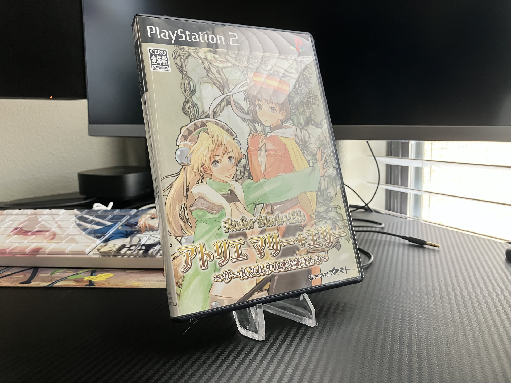

1game1week - Week 12 (3/18/25) - Atelier Marie ~Alchemist of Salsburg~
Hey all! It's week 12! (3/19 -> 3/26)
No real updates about life. Hope everyone's been doing well!
New games from 3/12 -> 3/18:
* G-MODE Archives+: Aigis the First Mission (PC)
* Rockstar Games Presents Table Tennis (Xbox 360)
* Shadow the Hedgehog (GameCube)
Currently, my backlog is at +16 (lower is better).
And onto 1g1w. Once again, a game is considered "beaten" if I've accomplished the main objective of the game.
GAME: Atelier Marie ~Alchemist of Salsburg~
PLATFORM: PlayStation 2
STARTED ON: 3/1
BEATEN ON: 3/2
Is this the first PS2 game I'm playing this year? I think so.
Only recently picked up this game from an import site, back in Week 10.
Thankfully there's a patch available to make a dumped ISO of this game into English for use with a PS2 Homebrew loader, like OPL. So I was able to play the game front to back with no issues!
A funny thing that stuck out to me is how similar it was to the remake, which I've played before. I guess it's moreso backwards, where the remake is just really similar. It just felt like a normal playthrough. Sure, there's a few quality of life things, but overall... it's pretty much the same thing.
Classic Atelier is really awesome.
The ending I wound up getting is the Teacher ending, which is where you're able to make the philosopher's stone.
It's week 12 and by the end of this week, Atelier Yumia will release. I actually scheduled 3 days of PTO for a super long weekend, just to play it (and Xenoblade X).
Yumia had a demo, which was fun. I'm a bit conflicted though... it seemed like a pretty grandiose adventure, open world, all that stuff. But wasn't the Atelier thing that it's a cozy time management RPG without many real-world consequences?
I'm probably just looking too deep into it. Classic Atelier is enjoyable and new Atelier is enjoyable, so it's fine. Two cakes!
Right now, I'm reading through Higurashi When They Cry Chapter 5: Meakashi. I was recently in an intense theory-sharing session with a few friends, so it got me really fired up...
I'm really trying to read as fast as I can, so I can be done before Yumia releases...
That's all for now. See you next week!

Thanks for reading! If you need to contact me for any reason, please feel free to email me at aru@hoshikawa-aru.com.